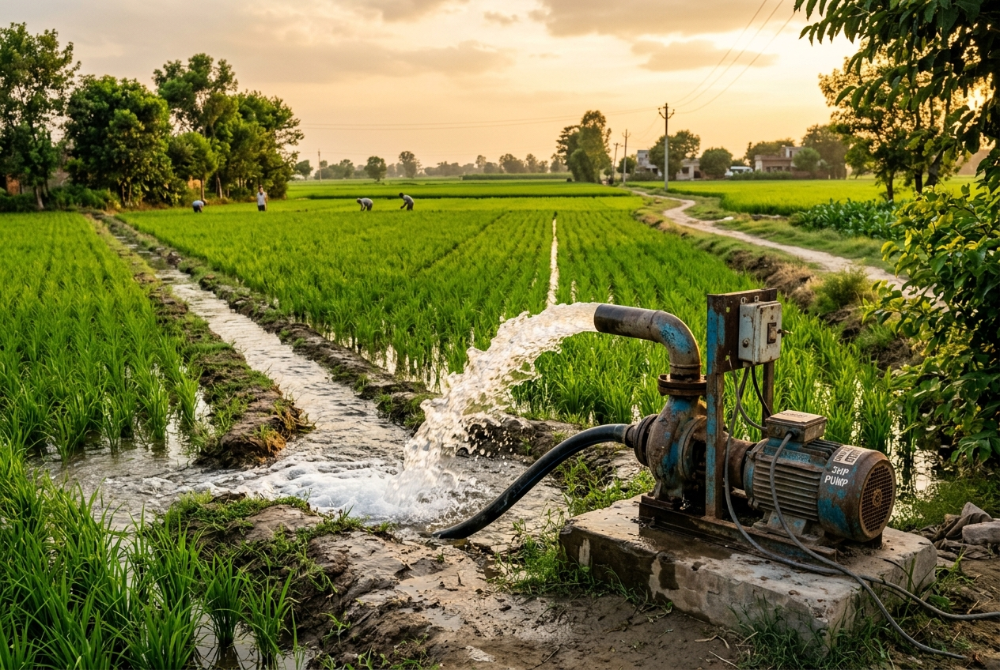
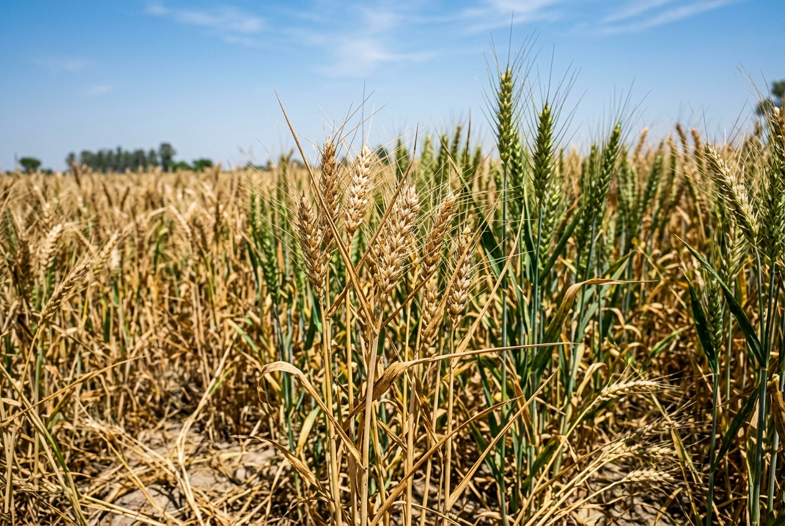
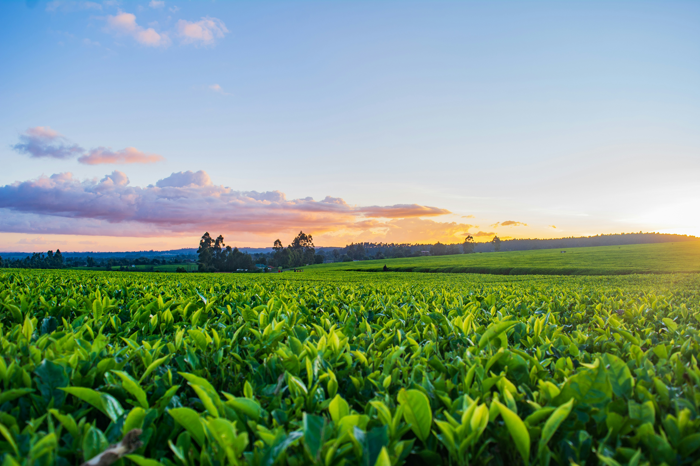
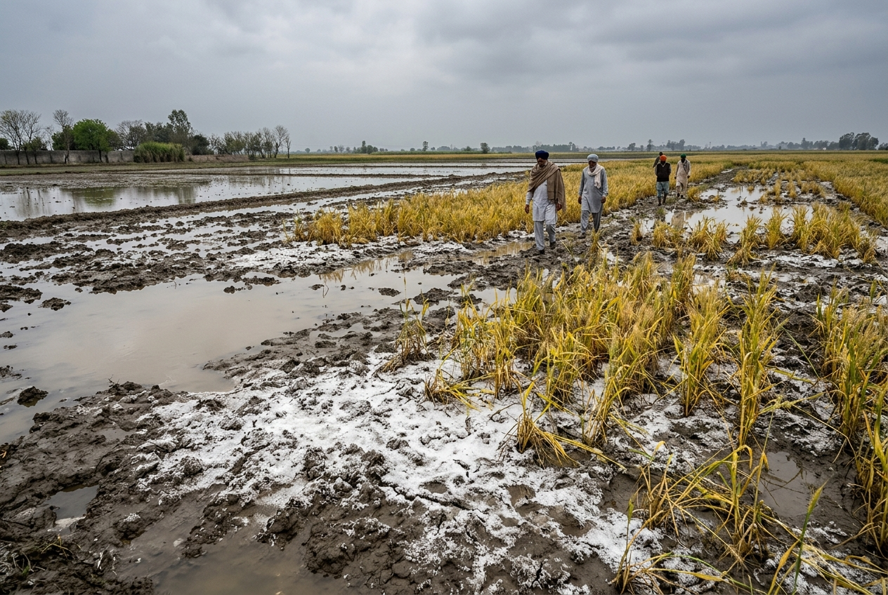
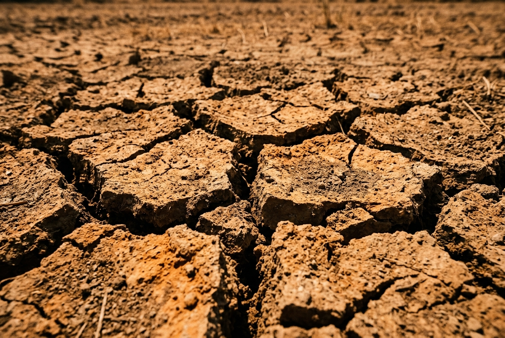
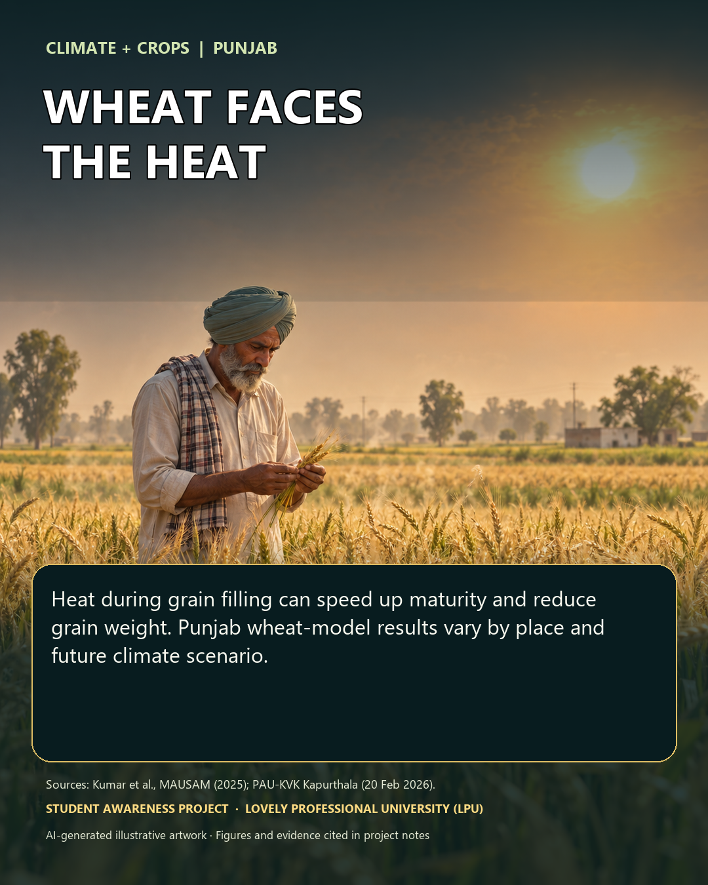
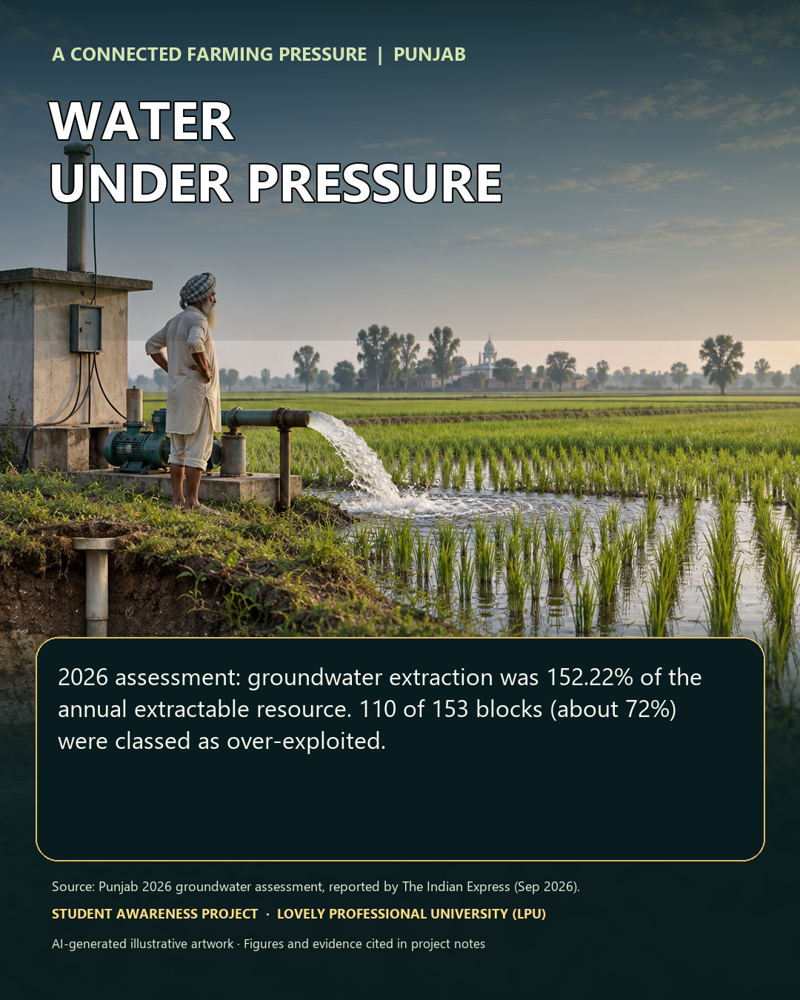
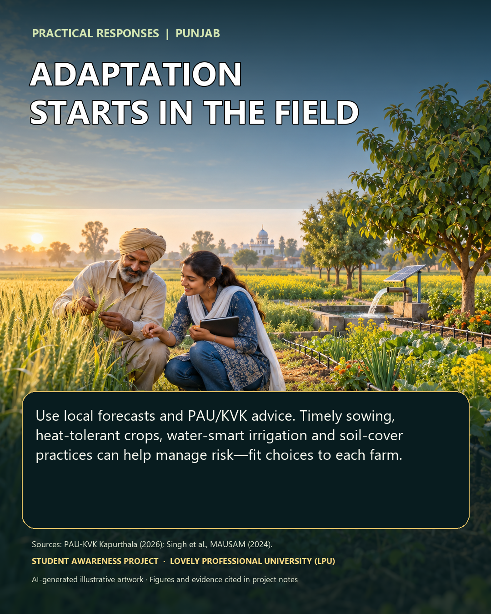
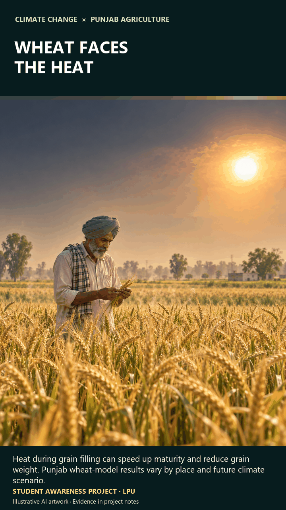

groundwater assessment blocks remain over-exploited in the 2025–26 Punjab assessment
Research snapshot
A food-producing region at a turning point
Recent assessments show some improvement in groundwater pressure, alongside serious exposure to heat, fire and flood damage. Each figure below is labelled with its reporting period.
stage of groundwater extraction in that assessment
CAQM-recorded paddy fire counts for the full 2025 season
of farmland reported submerged during Punjab’s 2025 floods
Why this matters
Punjab’s irrigation, crop choices and food procurement systems are tightly connected. The state’s 2025–26 assessment still puts annual groundwater extraction above the annual extractable resource, even as the reported extraction rate improved from earlier assessments.
Climate and weather shocks add pressure at different points in the crop calendar: March heat can shorten wheat grain filling; intense monsoon rain can submerge standing crops, damage soil and delay the next sowing window.
Read reporting periods beside figures; seasonal counts are not annual totals.
Groundwater: annual resource and extraction
2025–26 state assessment · billion cubic metres (BCM)
Water security
Groundwater: a persistent deficit
The latest Punjab assessment reports lower extraction than in the earlier comparison year, but withdrawals still exceed the resource considered available for annual extraction.
What the 2025–26 assessment says
Punjab’s reported annual extraction was 26.32 BCM, compared with 17.29 BCM of annual extractable groundwater resource. The extraction stage was 152.22%. Annual recharge was estimated at 19.14 BCM.
- 110 of 153 assessed blocks were over-exploited.
- 24.95 BCM of extraction was attributed to irrigation.
- Fewer blocks were over-exploited than in the preceding state assessment; that is progress, not recovery.
Punjab assessment figures reported 31 August 2026.

Groundwater irrigation is a central part of Punjab’s crop system.
Assessment block status
110 over-exploited · 6 critical · 17 semi-critical · 20 safe
Monitored water levels
71.11%
of CGWB-monitored wells recorded a decline from May 2024 to May 2025, covering 73.75% of the state’s area.
CGWB annual fluctuation bulletin · pre-monsoon 2024 to pre-monsoon 2025
A shared response
Canal water can reduce pressure on wells where it reaches farms. Longer-term water security also depends on crop demand, irrigation practice, recharge and reliable alternatives for farmers.
See the solutions and linked assessment sources.
Climate & weather
Extremes affect each crop differently
Heat during grain filling and very wet monsoon periods create distinct risks. These figures describe observed events and impacts; they do not assign a single event to climate change.

Terminal heat can force wheat to mature before grain filling is complete.
Heat stress and rainfall shocks
During March and April 2022, unusually high temperatures accelerated crop development. ICAR-CRIDA recorded yellowing and shrivelled wheat grain, forced maturity and yield reductions of up to 25% in affected Punjab districts.
Punjab's cumulative monsoon rainfall (1 June–19 September 2025) was 254.2 mm against a normal of 417 mm—a 39% deficit. However, August 2025 alone brought 74% more rain than normal for the month, and massive upstream inflows from Himachal Pradesh combined with dam releases caused catastrophic flooding across the state.
Event totals and crop impacts are tied to stated locations and dates.
Place matters
Punjab’s six agro-climatic zones
Punjab Agricultural University’s regional framework reflects differences in terrain, rainfall, soil and water conditions. Zone names guide planning; crop choices should follow local soil tests and current PAU or KVK advice.
Sub-mountain undulating
Shivalik foothills; slopes and runoff make erosion control and field-specific water management important.
Undulating plain
A transitional landscape where soil texture and water access can change over short distances.
Central plain
A major intensive farming belt; groundwater demand and crop diversification are key planning issues.
Western plain
Hotter and drier conditions call for careful irrigation planning and crops suited to local soils.
Western region
Arid and semi-arid conditions make water-efficient choices and heat preparedness especially relevant.
Flood plain
River corridors face inundation, sediment movement and the need for drainage and recovery plans.
Zone boundaries and district assignments can vary by planning map. Check the cited PAU framework before using this overview for farm-level decisions.
Case study · 2022
The wheat heatwave
A late-season heat shock arrived during grain filling, showing how a short extreme can affect yields even after a promising start to the season.
March–April 2022
ICAR-CRIDA describes dry winds, high evapotranspiration and crop moisture stress. In several affected Punjab districts, wheat showed yellowing and shrivelled grain and matured early.
Up to 25%yield reduction reported in affected districts
This is a reported upper impact for affected districts, not a statewide average.
ICAR-CRIDA, “Heat wave impacts on agriculture during 2022.”
Supplied project image; the 2022 impact figure is from ICAR-CRIDA.
Cropping systems
Make alternatives workable
Crop diversification is a water strategy only when it fits local conditions and farmers have reliable markets, services and risk support.
From a narrow rotation to local options
Punjab’s rice–wheat system supplies national food markets, but its irrigation demand is difficult to sustain where groundwater extraction exceeds the annual extractable resource. Shifting crops cannot rest on advice alone: procurement, processing, storage and predictable returns shape farmers’ choices.
- Match crop choices to zone, soil, water quality and the local growing season.
- Build market access and price support for suitable alternatives before asking farmers to switch.
- Use PAU and KVK recommendations for varieties, sowing windows and crop protection.

Crop planning works best when it starts with local conditions.
Soil & recovery
Repairing land after water stress
Drying, waterlogging, erosion and deposited sediment create different soil problems. Recovery needs local assessment rather than one statewide prescription.
Read the field before treating it
After the 2025 floods, ICAR reported sand and silt deposits of 1–3 feet in some Gurdaspur locations, alongside crop loss, erosion and reduced soil fertility. Its report describes field rehabilitation before cultivation resumes.
PAU’s flood-area advisory recommended draining excess water and monitoring crop-specific symptoms. Soil tests and local extension advice should guide nutrient or disease treatment after inundation.
Flood-affected soil claims are kept separate from statewide soil trends.

Water-affected soils need site-specific assessment and drainage planning.
Crop residue
Stubble-burning counts are falling
CAQM’s official paddy-season series shows a large decline in Punjab’s reported farm-fire counts from 2021 to 2025. Counts use the 15 September–30 November monitoring period.
Punjab paddy-season fire counts · full seasons
CAQM / ISRO standard monitoring period · 15 September to 30 November
Keep the latest count in context
The 2025 total was 5,114 fire counts, 53% below 2024. Whole-season data should not be mixed with early-season reports.
For 2026, 52 fire incidents had been reported by 29 September. Physical verification confirmed signs of residue burning in 16 cases. This is a provisional early-season snapshot, not a full-season total.
2026 snapshot reported by IANS from government data; dates and verification status are shown.
Floods & crop health
Flood damage and the next crop
Punjab’s August–September 2025 floods damaged standing crops and complicated field recovery. Figures below come from government and ICAR reporting.
of farmland reported submerged across Punjab
districts affected, according to ICAR’s recovery report
of agricultural land submerged in Gurdaspur district

Punjab faces both excess-water damage and dry-season water stress.
Recovery is a crop-calendar issue
ICAR reports that flood-hit fields in parts of Gurdaspur were left with deep sand and silt deposits. Standing paddy, sugarcane, maize and fodder were damaged, and timely wheat sowing was at risk. In the most affected blocks it reported damage to over 90% of cultivated area.
After floodwaters recede, drainage, sediment removal, land levelling and access to seed and machinery can determine whether the next crop is planted on time.
District-level ICAR figures are not statewide crop-loss totals.
Monitor pests, weeds and disease after shocks
PAU reported paddy dwarfing virus in multiple districts in 2025; the virus is spread by the whitebacked planthopper. A separate PAU survey after the 2023 and 2025 floods found new weed species in several flood-affected districts and noted that some can host pests or disease-causing organisms. Diagnose locally and follow current PAU/KVK advice instead of applying blanket treatments.
Farm livelihoods
Climate risk reaches the farm budget
When an extreme event damages a crop, farmers also face costs to restore fields, obtain inputs and keep the next sowing on schedule.
Water access
Dependence on wells makes crop planning and irrigation alternatives important for household and state costs.
Recovery costs
Flooded or silted fields may need drainage, levelling, seed and machinery before the next season.
Income uncertainty
Heat and flood damage can reduce marketable harvest and make a crop switch feel riskier without reliable support.
A practical path
Solutions that fit Punjab’s fields
Combine water management with crop-market support, crop-health services and flood recovery. No single practice can solve every zone’s risks.
Reach farms with canal water
Maintain canals and watercourses, improve tail-end access and track whether reliable surface water reduces pumping demand.
Water planning
Make diversification viable
Pair zone-suited crops with procurement, processing, storage and predictable market support for farmers.
Crop systems
Use water more carefully
Use PAU-recommended irrigation scheduling, land levelling and suitable water-saving practices for each crop.
Field practice
Keep residue on the field
Make in-situ residue machinery and custom hiring accessible, and support locally workable uses for straw.
Residue management
Prepare for flood recovery
Plan drainage, sediment removal, seed access and field restoration before the next sowing window.
Resilience
Strengthen crop-health advice
Support regular field scouting and timely PAU/KVK advice for heat stress, weeds, insects and disease.
Extension
Media & outreach
Stories from the field
A home for the project documentary, five visual banners and social-media reporting.
Project documentary · 16:9 Teaser preview
The 16:9 documentary exploration of Punjab's climate frontline, groundwater stress and farming resilience.
Field Reel · 9:16 Open in Instagram
Ground-level field video & agricultural overview in 9:16 mobile format. Tap to play or watch on Instagram.
Five-banner gallery
Tap any banner to view full-resolution preview.





Social-media analytics
Verified post links and platform distribution.
| Platform | Profile or channel | Content focus | Status / Link | Period |
|---|---|---|---|---|
| YouTube | Handle pending | Documentary and explainers | To be set | To be set |
| @prabhat._.yadav_01 | Field video & agriculture report (9:16) | Live Reel | Active |
No social handles or performance figures were provided, so no audience metrics have been invented.
Evidence & references
Sources
Figures are tied to the publication or reporting period stated in the page. Open the links for methods, definitions and local advisories.
01
Punjab groundwater assessment · 2025–26
Annual resource, extraction and block categories reported from the state assessment on 31 August 2026.
02
CGWB · Punjab, 2025
Official publication record for Punjab dynamic resources, groundwater levels and groundwater quality.
03
CGWB groundwater-level bulletin · 2025
Pre-monsoon 2024 to pre-monsoon 2025 annual fluctuation across monitored wells and area.
04
Punjab agro-climatic zones · research article
Six agro-climatic regions and their role in region-specific agricultural planning.
05
ICAR-CRIDA · 2022 heatwave impacts
Wheat grain shrivelling, forced maturity and district-level yield reductions in Punjab.
06
CAQM · paddy fire counts, 2021–2025
Official season totals under the 15 September–30 November monitoring protocol.
07
2026 early-season fire snapshot · IANS
52 incidents reported by 29 September 2026; field verification status shown separately.
08
Government of Punjab · flood relief, 2025
Statewide flood-affected area and relief information for August 2025.
09
ICAR-KVK Gurdaspur · flood recovery
District-level crop, sediment, soil and next-season recovery impacts from the 2025 floods.
10
PAU · paddy dwarfing virus, 2025
Survey findings, whitebacked planthopper vector and crop-health guidance.
11
PAU · flood-altered weed flora, 2026
Survey of flood-affected districts and emerging weed, pest-host and disease risks.
12
PAU · flood-affected crop advisory, 2025
Drainage and crop-specific recommendations for affected areas.
13
Punjab monsoon rainfall · IMD data via Hindustan Times, 2025
Cumulative rainfall 254.2 mm vs 417 mm normal (39% deficit) for 1 June–19 September 2025; August 2025 was 74% above normal.
CHE 110 · LPU
Project team
SADAKHET · CHE 110 · Lovely Professional University
Prabhat Yadav
Data, Site & Video EditingB.Tech CSE (Robotics & AI)
Rohan Jaswal
Data & Written WorkB.Tech CSE (Robotics & AI)
A Aryan
Data & VideoB.Tech CSE (Robotics & AI)